Chapter 7 Multiple Treatment Designs
In the last unit, we were introduced to multiple-treatment experiments, using an example with which many of you are familiar: a hybrid research or demonstration trial. Recall how the analysis of variance worked: we compared two sources of variation to see how much of that variation each of them explained. There were two effects in our original trial: treatment and error
\[ Y_{ij}=\mu + T_i + \epsilon_{i(j)}\]
The Analysis of Variance (ANOVA) was used to calculate and compare these variances. First, the sums of squares from the treatment means and the error (the summed distributions of observations around each treatment mean) were calculated. By dividing the sum of squares by their degrees of freedom, the we obtained the treatment and error mean squares, also known as their variances. The F-value was derived from the ratio of the treatment variance to the error variance. Finally, the probability that the difference among treatments was zero, given the F-value we observed, was calculated using the F-distribution.
This experimental design is known as a Completely Randomized Design. It is the simplest multiple-treatment design there is. In this unit, we will learn two other designs commonly used in trials:
- Randomized Complete Block Design
- Two-Way Factorial Design
These designs, we will see, use additional sources of variation to either expand the number of treatments we can evaluate, or reduce the error (unexplained variation) in our trials so that we can better identify treatment effects.
7.1 Randomized Complete Block Design
If you have participated in agronomic research, you have likely heard references to a Randomized Complete Block Design (RCBD). We first discussed blocking when we learned about side-by-side trials. When we block treatments, we force treatments to occur in closer proximity to each other than they likely would were they assigned at random. The best way to understand this is to look at a plot map.
library(tidyverse)
col = rep(1:4, each=4)
row = rep(1:4, 4)
block = rep(1:4, each=4)
set.seed(5)
crd = sample(col, 16, replace = FALSE)
rcbd_list = list()
for(i in c(1:4)){
set.seed(i)
z = sample(1:4, 4, replace = FALSE)
rcbd_list[[i]] = z
}
rcbd = do.call(c, rcbd_list)
dataset = cbind(col, row, block, crd, rcbd) %>%
as.data.frame() %>%
gather(design, treatment, crd, rcbd) %>%
mutate(design = toupper(design)) %>%
mutate(block_effect = case_when(col==1 ~ 3,
col==2 ~ 1,
col==3 ~ -1,
col==4 ~ -3))
dataset %>%
ggplot(aes(x=col, y=row, label=treatment)) +
geom_tile(fill="grey", color="black") +
geom_text(aes(label = treatment)) +
facet_grid(. ~ design)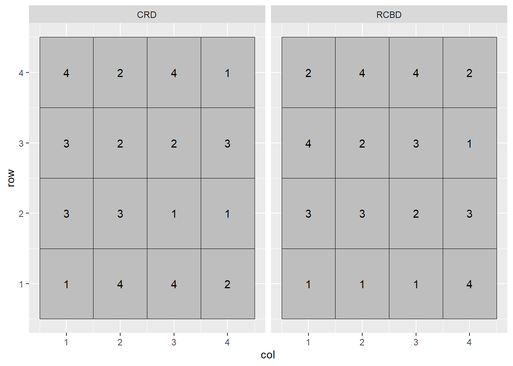
In the plot above, the Completely Randomized Design (CRD) is shown on the left, and the Randomized Complete Block Design (RCBD) on the right. In the Completely Randomized Design, any treatment can occur anywhere in the the plot. Note that in the left plot, treatment 3 occurs twice in the first column of plots while treatment 2 does not occur at all. Treatment 2 occurs twice in the second column, but there is no treatment 1. In the Randomized Complete Block Design, each treatment must occur once, and only once, per column. In this case, the treatments are blocked on column.
Why block? Let’s suppose each column in the plot map above has a different soil type, with soils transitioning from more productive to less productive as columns increase from 1 to 4:
dataset %>%
ggplot(aes(x=col, y=row, label=treatment)) +
geom_tile(aes(fill=as.factor(col)), color="black") +
geom_text(aes(label = treatment)) +
scale_fill_manual(values = c("lightgreen", "yellow2", "orange1", "tomato")) +
facet_grid(. ~ design) +
theme(legend.position = "none")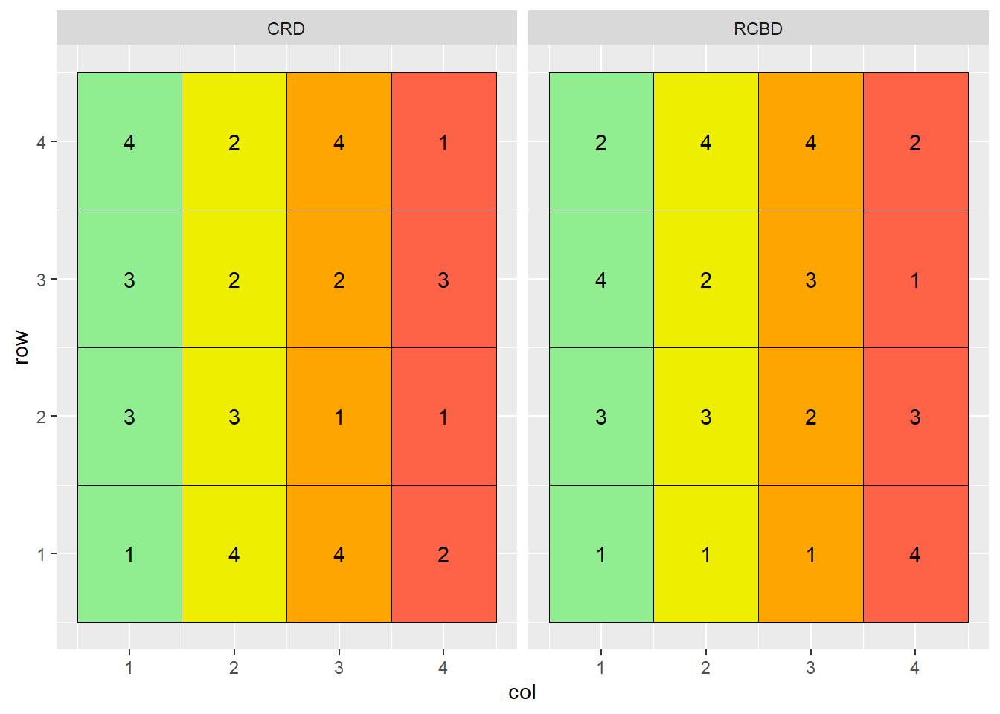
Note that treatment 3 occurs three times in the more productive soils of columns 1 and 2, and only once in the less productive soils of columns 3 and 4. Conversely, treatment 1 occurs three times in the less productive soils of columns 3 and 4, but only once in the more productive soil of columns 1 or 2.
If the mean effect of treatment 3 is greater than the mean effect of treatment 1, how will we distinguish the effects of treatment and error? It is a moot question: we can’t. Our linear model is additive:
\[ Y_{ij}=\mu + T_i + \epsilon_{i(j)}\]
The term additive is important: it means we assume that treatment and error effects do not interact – they independently add or subtract from the population mean. If the measured effect of treatment is dependent on plot error, the model fails.
The plot on the right has blocked treatments according to column. Doing that allows us to remove the effect of soil type, which consistently varies from column to column, from the effect of error, which is random. Our linear model changes as well:
\[ Y_{ij}=\mu + B_i + T_j + BT_{ij}\]
Where \(Y_{ij}\) is the individual value, \(\mu\) is the population mean, \(B_i\) is the block effect, \(T_j\) is the treatment effect, and \(BT_{ij}\) is the interaction of block and treatment, also known as the error effect.
7.1.1 Case Study: Randomized Complete Block Design
A field trial outside Goshen, Indiana, evaluated the effect of seed treatments on soybean yield. Treatments were as follows: - A: untreated - B: metalaxyl only - C: metalaxyl + insecticide - D: metalaxyl + insecticide + nematicide
Treatments were arranged in a Randomized Complete Block Design.
library(tidyverse)
st = data.frame(obs=c(1:16))
set.seed(041383)
mu = rep(c(68.3))
Block = rep(1:4, each=4)
B = rep(c(-2.2, -0.8, 0.3, 1.2), each = 4)
Treatment = rep(c("A","B","C","D"), 4)
T = rep(c(-1.1, -0.3, 0.8, 1.6), 4)
BT = rnorm(n=16, mean = 0, sd = 1)
st_data = st %>%
cbind(Block, Treatment, mu, B, T, BT) %>%
mutate(BT = round(BT,1)) %>%
mutate(Y = mu+B+T+BT) %>%
group_by(Block) %>%
sample_n(4) %>%
ungroup() %>%
select(-obs) %>%
mutate(Block = as.factor(Block))
st_data$row = rep(1:4, 4)
st_data %>%
mutate(plot_label = paste0("Treatment ", Treatment, "\n", Y)) %>%
ggplot(aes(x=block, y=row, label=plot_label)) +
geom_tile(fill="grey", color="black") +
geom_text(aes(label = plot_label))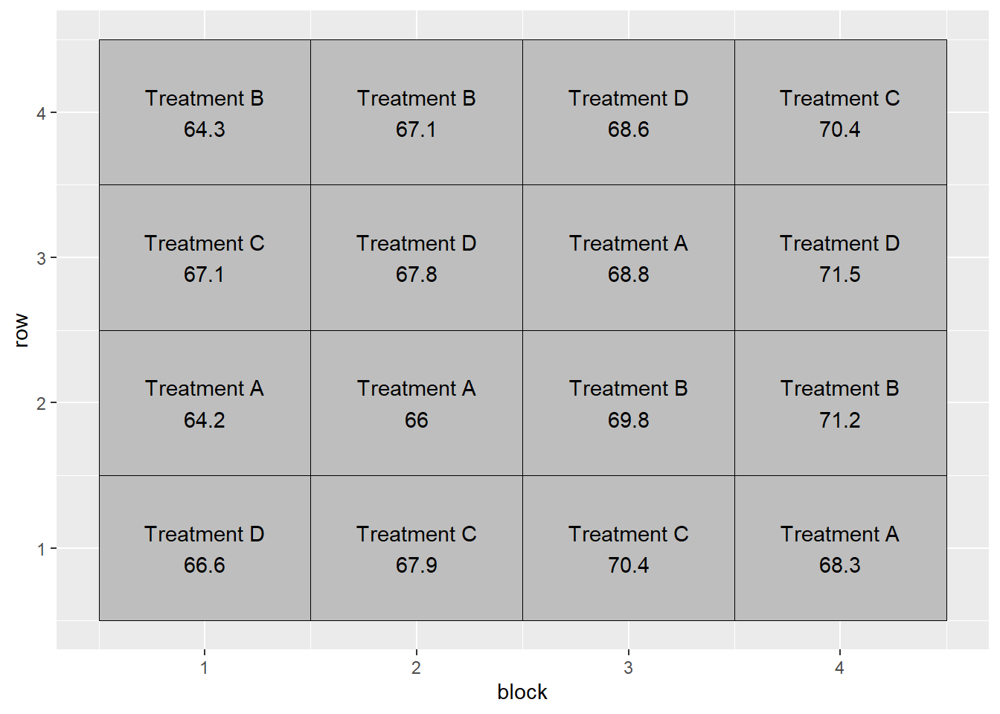
7.1.1.1 Linear Additive Model
In this example, the linear additive model is:
\[ Y_{ij}=\mu + B_i + T_j + BT_{ij}\]
Or, with regard to our particular trial:
\[ Yield = Population \space Mean + Block \space Effect + Treatment \space Effect + Block \times Treatment \space Interaction\]
We can see how the additive model works in the following table:
st_effects = st_data %>%
select(Block, row, Treatment, mu, B, T, BT, Y)
knitr::kable(st_effects)| Block | row | Treatment | mu | B | T | BT | Y |
|---|---|---|---|---|---|---|---|
| 1 | 1 | D | 68.3 | -2.2 | 1.6 | -1.1 | 66.6 |
| 1 | 2 | A | 68.3 | -2.2 | -1.1 | -0.8 | 64.2 |
| 1 | 3 | C | 68.3 | -2.2 | 0.8 | 0.2 | 67.1 |
| 1 | 4 | B | 68.3 | -2.2 | -0.3 | -1.5 | 64.3 |
| 2 | 1 | C | 68.3 | -0.8 | 0.8 | -0.4 | 67.9 |
| 2 | 2 | A | 68.3 | -0.8 | -1.1 | -0.4 | 66.0 |
| 2 | 3 | D | 68.3 | -0.8 | 1.6 | -1.3 | 67.8 |
| 2 | 4 | B | 68.3 | -0.8 | -0.3 | -0.1 | 67.1 |
| 3 | 1 | C | 68.3 | 0.3 | 0.8 | 1.0 | 70.4 |
| 3 | 2 | B | 68.3 | 0.3 | -0.3 | 1.5 | 69.8 |
| 3 | 3 | A | 68.3 | 0.3 | -1.1 | 1.3 | 68.8 |
| 3 | 4 | D | 68.3 | 0.3 | 1.6 | -1.6 | 68.6 |
| 4 | 1 | A | 68.3 | 1.2 | -1.1 | -0.1 | 68.3 |
| 4 | 2 | B | 68.3 | 1.2 | -0.3 | 2.0 | 71.2 |
| 4 | 3 | D | 68.3 | 1.2 | 1.6 | 0.4 | 71.5 |
| 4 | 4 | C | 68.3 | 1.2 | 0.8 | 0.1 | 70.4 |
In the first row of the table, we see that the observed yield, Y, is:
\[ Y = 68.3 + (-2.2) + (1.3) + (-1.1) = 66.3 \]
Similarly, in the fifth row:
\[ Y = 68.3 + (-0.8) + (0.5) + (-0.4) = 67.6 \]
7.1.1.2 Analysis of Variance
We can use the linear additive model above with R to create the proper linear model:
model = aov(Y ~ Block + Treatment, st_data)
anova(model)## Analysis of Variance Table
##
## Response: Y
## Df Sum Sq Mean Sq F value Pr(>F)
## Block 3 56.250 18.7500 23.7175 0.0001313 ***
## Treatment 3 10.485 3.4950 4.4209 0.0359018 *
## Residuals 9 7.115 0.7906
## ---
## Signif. codes: 0 '***' 0.001 '**' 0.01 '*' 0.05 '.' 0.1 ' ' 1Note that in the above model, we only specify the Block and Treatment sources of variation. Any source of variation not included in the model and, if you will “leftover” from the model, is pooled into the Residuals, or error. In the model above, the interaction of Block and Treatment (BT) is not specified, for it is the source of any variation we observe from plot to plot.
Two sources of variation are tested above: Block and Treatment. The F-value for both is calculated by dividing their Mean Square by the Residual (or Error) Mean Square. The probability that the difference among blocks or treatment is zero, given their observed F-value, is reported in the \(Pr(>F)\) column.
The Block effect is usually of less interest in analyzing table results. If it is insignificant, that may indicate we don’t need to block in this location in the future, but in the vast majority of trials there will be at least some benefit to blocking.
The most important effect of blocking is seen upon examining the Sum of Squares (“Sum Sq”) column. Here we can see just how much the Residual Sum of Squares was reduced by including blocks in the model. Had we not included the Block term in our model, our Residual Sum of Squares would have been about 63.4. Even given the greater residual degress of freedom (which would have included the three degrees of freedom that were assigned to Block, the residual mean square would have been about \(64\div12 = 5.3\). Without even calculating F, we can see the error mean square would have been larger than the treatment mean square, meaning there was more variance within treatments than between them. The Treatment effect would not have been significant.
7.2 Factorial Design
Agronomy is all about interactions. How do hybrids differ in their response to nitrogen? Response to fungicide? Does a fungicide increase yield more when it is sprayed on corn at V5 or VT? Does the effect of a starter fertilizer depend whether it is applied in-row or in a 2x2 band? How does a crop respond to popuation in 30-inch rows vs 15-inch rows?
To grow a successful crop requires not a single input, but dozens, some of which we can manage and others we can’t. So the issue of how different treatments interact is critical. It is also often more efficient and informative for us to study these interactions together in a single trial, than to study them separately in two or more trials.
Before we go further, some nomenclature. In factorial design, treatments that differ in a single variable are called levels, and these levels together compose a factor. Here are some examples of levels and factors:
- multiple micronutrient products all applied at the V5 stage in corn – the product composition is the level, the timing the factor
- a single fungicide product, applied at V5, V10, or VT in corn – the timing is the level, the fungicide composition the factor
- a single adjuvant, tested with different nozzles – the nozzle is the level, the adjuvant composition the factor
- multiple hybrids, grown in rotation following soybean – the hybrid is the level, the crop rotation is the factor
As you may have anticipated, a factorial design combines two or more factors, each containing two or more levels. For example:
- Factor “Composition” includes two levels of foliar micronutrient product: Mn and Zn
- Factor Timing” includes two levels of timing: V5 and VT
In a factorial designm, every level of factor Composition will occur with every level of factor Timing. We can visualize these treatment combinations the same way we might visualize a Punnet square in Mendalian genetics. The main effects are given on the axes and the particular treatment combinations are in the cells.
factorial_trts_1 = data.frame(Timing = c("V5", "VT", "V5", "VT"),
Composition = c("Mn", "Mn", "Zn", "Zn"),
trt = c("Mn @ V5", "Mn @ VT", "Zn @ V5", "Zn @ VT"))
factorial_trts_1 %>%
ggplot(aes(x=Timing, y=Composition)) +
geom_tile(color="black", fill="grey") +
geom_text(aes(label = trt), size=6) +
theme(axis.title = element_text(size=18),
axis.text = element_text(size=14))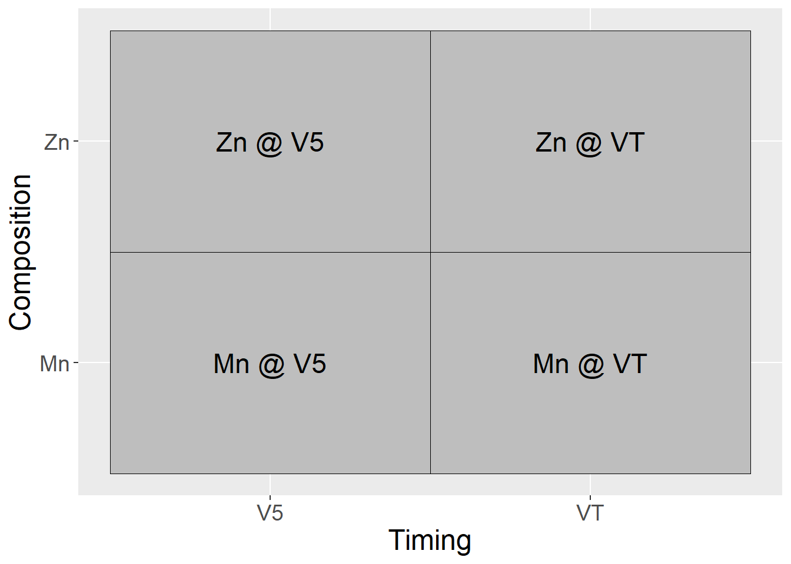
In another example: - Factor “Composition” consists of two adjuvant ingredients: guar (G) or an polyacrylamide (P) - Nozzles are Flat Fan (F) or AI nozzle (A)
Our treatments in the factorial design, then, are:
factorial_trts_2 = data.frame(Nozzle = c("FF", "AI", "FF", "AI"),
Composition = c("G", "G", "P", "P"),
trt = c("FF x G", "AI x G", "FF x P", "AI x P"))
factorial_trts_2 %>%
ggplot(aes(x=Nozzle, y=Composition)) +
geom_tile(color="black", fill="grey") +
geom_text(aes(label = trt), size=6) +
theme(axis.title = element_text(size=18),
axis.text = element_text(size=14))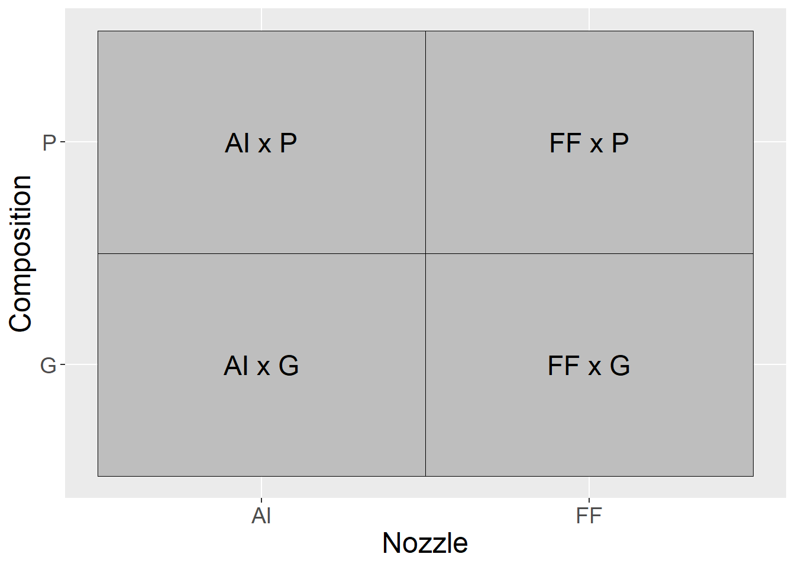
7.2.1 Case Study 1
Our case study is a clover forage trial conducted in New Zealand from 1992 to 1994. This dataset is publically available as part of the agridat package in R. For this first case study, we will focus on a subset of the data. The two factors were sulfur (S) and phosphorus (P) fertilizer. Sulfur was applied at 0, 11.25, or 22.5 kg/ha, while phosphorus was applied at 0, 40, and 80 kg/ha. Yield is reported in tons/hectare.
Factorial trials are often nicknames by the number of levels of each factor. In this case, we have a \(three-by-three\), or \(3\times3\) trial. We can visualize the factorial combinations as producing the following nine treatments:
factorial_trts_3_main = data.frame(Sulfur = rep(c(0, 11.25, 22.5),3),
Phosphorus = rep(c(0,80,160), each=3))
factorial_trts_3_combos = factorial_trts_3_main %>%
mutate(trt = paste0("S = ", Sulfur, "\n", "P = ", Phosphorus))
factorial_trts_3_combos %>%
ggplot(aes(x=Sulfur, y=Phosphorus)) +
geom_tile(color="black", fill="grey") +
geom_text(aes(label = trt), size=6) +
theme(axis.title = element_text(size=18),
axis.text = element_text(size=14))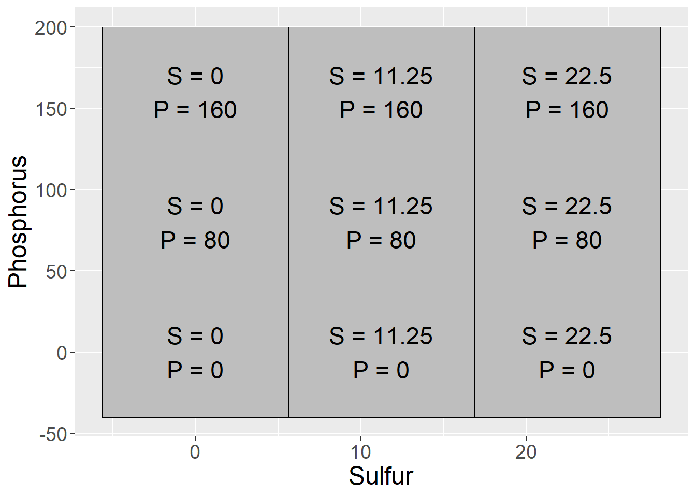
library(agridat)
library(tidyverse)
clover = sinclair.clover
clover_dataset = clover %>%
filter(S %in% c(0, 11.25, 22.50)) %>%
filter(P %in% c(0, 80, 160)) %>%
mutate(S = as.factor(S),
P = as.factor(P))
clover_data = data.frame(block = rep(1:4, each=9),
treatment = rep(1:9, 4),
sulfur = rep(clover_dataset$S,4),
phosphorus = rep(clover_dataset$P,4),
s_p_means = rep(clover_dataset$yield,4))
clover_effects = clover_data %>%
mutate(mu = mean(s_p_means)) %>%
group_by(sulfur) %>%
mutate(S = mean(s_p_means) - mu) %>%
ungroup() %>%
group_by(phosphorus) %>%
mutate(P = mean(s_p_means) - mu) %>%
ungroup() %>%
group_by(sulfur, phosphorus) %>%
mutate(SP = mean(s_p_means) - (mu + S + P)) %>%
ungroup() %>%
select(-treatment, -s_p_means) %>%
mutate(mu = round(mu,2),
S = round(S,2),
P = round(S,2),
SP = round(SP,2))
set.seed(073020)
clover_final = clover_effects %>%
mutate(Error = rnorm(36, 0, 0.4)) %>%
mutate(Error = round(Error, 1)) %>%
mutate(Yield = mu + S + P + SP + Error) When we deal with factorial designs, it is important to visualize the data. We can observe the data patterns using a line plot. We see clover yield increased with sulfur and phosphorus. We notice, however, the difference in yield between P=80 and P=160 is greater when S=0 than when S=11.25 or S=22.5. We also notice the difference betwee sulfur=0 and sulfur=22.5 is greater for P=160 than P=0.
clover_final %>%
group_by(sulfur, phosphorus) %>%
summarise(Yield = mean(Yield)) %>%
ungroup() %>%
ggplot(aes(x=sulfur, y=Yield, group=phosphorus)) +
geom_line(aes(color=phosphorus), size=2) +
theme(axis.text = element_text(size=12),
axis.title = element_text(size=14),
legend.text = element_text(size=12),
legend.title = element_text(size=14))## `summarise()` has grouped output by 'sulfur'. You can override using the `.groups` argument.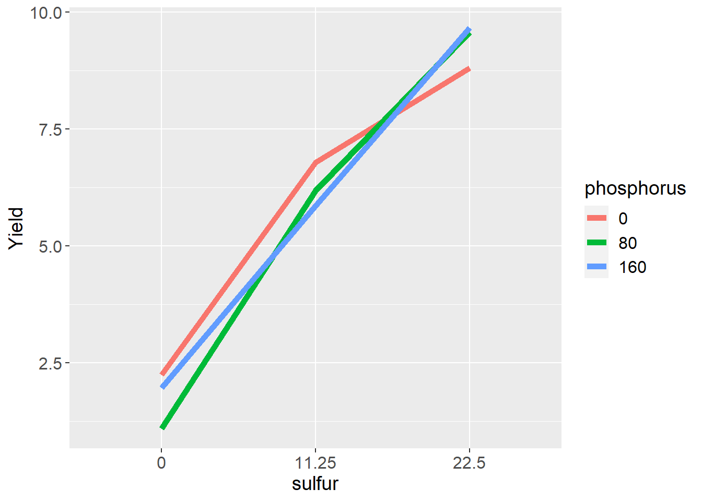
These differences are called interactions and are the most interesting part of a factorial design. In this case, it is no surprise that crop yield increases with sulfur fertiliztion in a sulfur soil. It is interesting, however, that the response to sulfur is appears to be dependent on phosphorus fertilization, and lends support to Liebig’s Law of the Minimum, which states that addition of a particular nutrient will not increase yield if other nutrients are more deficient.
7.2.1.1 Linear Additive Model
For our trial with two factors, the linear model is:
\[ Y_{ijk} = \mu + S_i + P_j + SP_{ij} + \epsilon_{ij(k)} \] Each observed value, then, is the sum (additive value) of the population mean (\(\mu\)), sulfur effect (\(S\)), phosphorus effect (\(P\)), the interaction of sulfur and phosphorus (\(SP\)), and the error (\(\epsilon\)). As in previous models, error is the random source of variation due to environmental and instrumental inconsistency. \(S_i\) and \(P_j\) are described as main effects. \(SP_{ij}\) is the interaction.
In the table below, the effects from this linear model are broken out:
knitr::kable(clover_final)| block | sulfur | phosphorus | mu | S | P | SP | Error | Yield |
|---|---|---|---|---|---|---|---|---|
| 1 | 0 | 0 | 5.72 | -2.06 | -2.06 | 0.37 | -0.1 | 1.87 |
| 1 | 0 | 80 | 5.72 | -2.06 | -2.06 | -0.38 | 0.2 | 1.42 |
| 1 | 0 | 160 | 5.72 | -2.06 | -2.06 | 0.01 | 0.1 | 1.71 |
| 1 | 11.25 | 0 | 5.72 | 0.24 | 0.24 | 0.29 | 0.2 | 6.69 |
| 1 | 11.25 | 80 | 5.72 | 0.24 | 0.24 | 0.16 | -0.4 | 5.96 |
| 1 | 11.25 | 160 | 5.72 | 0.24 | 0.24 | -0.44 | 0.0 | 5.76 |
| 1 | 22.5 | 0 | 5.72 | 1.81 | 1.81 | -0.66 | 0.6 | 9.28 |
| 1 | 22.5 | 80 | 5.72 | 1.81 | 1.81 | 0.23 | 0.2 | 9.77 |
| 1 | 22.5 | 160 | 5.72 | 1.81 | 1.81 | 0.43 | -0.3 | 9.47 |
| 2 | 0 | 0 | 5.72 | -2.06 | -2.06 | 0.37 | 0.4 | 2.37 |
| 2 | 0 | 80 | 5.72 | -2.06 | -2.06 | -0.38 | 0.0 | 1.22 |
| 2 | 0 | 160 | 5.72 | -2.06 | -2.06 | 0.01 | 0.2 | 1.81 |
| 2 | 11.25 | 0 | 5.72 | 0.24 | 0.24 | 0.29 | 1.0 | 7.49 |
| 2 | 11.25 | 80 | 5.72 | 0.24 | 0.24 | 0.16 | 0.1 | 6.46 |
| 2 | 11.25 | 160 | 5.72 | 0.24 | 0.24 | -0.44 | -0.4 | 5.36 |
| 2 | 22.5 | 0 | 5.72 | 1.81 | 1.81 | -0.66 | -0.2 | 8.48 |
| 2 | 22.5 | 80 | 5.72 | 1.81 | 1.81 | 0.23 | -0.1 | 9.47 |
| 2 | 22.5 | 160 | 5.72 | 1.81 | 1.81 | 0.43 | 0.2 | 9.97 |
| 3 | 0 | 0 | 5.72 | -2.06 | -2.06 | 0.37 | 0.4 | 2.37 |
| 3 | 0 | 80 | 5.72 | -2.06 | -2.06 | -0.38 | -0.1 | 1.12 |
| 3 | 0 | 160 | 5.72 | -2.06 | -2.06 | 0.01 | 0.7 | 2.31 |
| 3 | 11.25 | 0 | 5.72 | 0.24 | 0.24 | 0.29 | 0.2 | 6.69 |
| 3 | 11.25 | 80 | 5.72 | 0.24 | 0.24 | 0.16 | -0.6 | 5.76 |
| 3 | 11.25 | 160 | 5.72 | 0.24 | 0.24 | -0.44 | 0.9 | 6.66 |
| 3 | 22.5 | 0 | 5.72 | 1.81 | 1.81 | -0.66 | 0.4 | 9.08 |
| 3 | 22.5 | 80 | 5.72 | 1.81 | 1.81 | 0.23 | -0.3 | 9.27 |
| 3 | 22.5 | 160 | 5.72 | 1.81 | 1.81 | 0.43 | 0.0 | 9.77 |
| 4 | 0 | 0 | 5.72 | -2.06 | -2.06 | 0.37 | 0.4 | 2.37 |
| 4 | 0 | 80 | 5.72 | -2.06 | -2.06 | -0.38 | -0.6 | 0.62 |
| 4 | 0 | 160 | 5.72 | -2.06 | -2.06 | 0.01 | 0.4 | 2.01 |
| 4 | 11.25 | 0 | 5.72 | 0.24 | 0.24 | 0.29 | -0.2 | 6.29 |
| 4 | 11.25 | 80 | 5.72 | 0.24 | 0.24 | 0.16 | 0.2 | 6.56 |
| 4 | 11.25 | 160 | 5.72 | 0.24 | 0.24 | -0.44 | -0.1 | 5.66 |
| 4 | 22.5 | 0 | 5.72 | 1.81 | 1.81 | -0.66 | -0.3 | 8.38 |
| 4 | 22.5 | 80 | 5.72 | 1.81 | 1.81 | 0.23 | 0.2 | 9.77 |
| 4 | 22.5 | 160 | 5.72 | 1.81 | 1.81 | 0.43 | -0.3 | 9.47 |
7.2.1.2 Analysis of Variance
In R, we use the same approach as previous weeks. All terms from the linear model, except the population mean and error, are included in the model statement.
library(broom)
# define the model
model = aov(Yield ~ sulfur + phosphorus + sulfur:phosphorus, data = clover_final)
#run the anova
anova_tab = tidy(model)
knitr::kable(anova_tab)| term | df | sumsq | meansq | statistic | p.value |
|---|---|---|---|---|---|
| sulfur | 2 | 349.0468222 | 174.5234111 | 1227.117734 | 0.0000000 |
| phosphorus | 2 | 0.6720889 | 0.3360444 | 2.362812 | 0.1133374 |
| sulfur:phosphorus | 4 | 5.7705111 | 1.4426278 | 10.143477 | 0.0000381 |
| Residuals | 27 | 3.8400000 | 0.1422222 | NA | NA |
In the table, we see that the main effect of sulfur is significant at the \(P \le 0.05\) level. The phosphorus effect is not significant. The interaction (sulfur:phosphorus) effect is also significant at the \(P\le0.05\) level.
When an interaction is significant, we should examine the effect of one factor independently at each level of the other. We can group analyses of one factor by levels of another factor using the group_by command in R. In this case we will tell R to run the analysis of variance for the sulfur effect separately for each level of P.
library(broom)
slice_1 = clover_final %>%
group_by(phosphorus) %>%
do(tidy(aov(.$Yield ~ .$sulfur))) %>%
as.data.frame() %>%
mutate(term = gsub("[.][$]", "", term))
knitr::kable(slice_1)| phosphorus | term | df | sumsq | meansq | statistic | p.value |
|---|---|---|---|---|---|---|
| 0 | sulfur | 2 | 90.33447 | 45.1672333 | 264.8242 | 0 |
| 0 | Residuals | 9 | 1.53500 | 0.1705556 | NA | NA |
| 80 | sulfur | 2 | 145.58927 | 72.7946333 | 671.9505 | 0 |
| 80 | Residuals | 9 | 0.97500 | 0.1083333 | NA | NA |
| 160 | sulfur | 2 | 118.89360 | 59.4468000 | 402.2716 | 0 |
| 160 | Residuals | 9 | 1.33000 | 0.1477778 | NA | NA |
We see that the effect of sulfur is significant at each level of phosphorus. We can group analyses of phosphorusby each level of sulfur.
library(broom)
slice_2 = clover_final %>%
group_by(sulfur) %>%
do(tidy(aov(.$Yield ~ .$phosphorus))) %>%
as.data.frame() %>%
mutate(term = gsub("[.][$]", "", term))
knitr::kable(slice_2)| sulfur | term | df | sumsq | meansq | statistic | p.value |
|---|---|---|---|---|---|---|
| 0 | phosphorus | 2 | 2.869267 | 1.4346333 | 17.331141 | 0.0008196 |
| 0 | Residuals | 9 | 0.745000 | 0.0827778 | NA | NA |
| 11.25 | phosphorus | 2 | 1.782067 | 0.8910333 | 3.734249 | 0.0659399 |
| 11.25 | Residuals | 9 | 2.147500 | 0.2386111 | NA | NA |
| 22.5 | phosphorus | 2 | 1.791267 | 0.8956333 | 8.507335 | 0.0084258 |
| 22.5 | Residuals | 9 | 0.947500 | 0.1052778 | NA | NA |
Whoa, what is going on here! We can now see the phosphorus effect is significant at S=0 and S=22.5, and almost significant at S=11.25. If we look at the line plot above, we see that phosphorus increases yield when S=0 and S=11.25, but decreases yield when S=22.5. The positive and negative effects cancelled each out when we looked at the overall analysis of variance – the interaction masked the sulfur effect so that its significance was not reflected in the results.
This demonstrates why it is so important to investigate interactions before making inferences about treatments. If we concluded from the first analysis of variance that sulfur affected yield, we would have been accurate. But if we had not analyzed the phosphorus effect separately by sulfur level, we would have erroneously concluded it did not affect yield.
7.2.2 Case Study 2
For the second case study, we are going to look at an experiment where turnips were planted at different densities in different row spacings. There were 5 densities and 4 row widths. This trial also blocked treatments, so it combines the randomized complete block and factorial designs.
7.2.2.1 Linear Additive Model
The linear additive model for this trial is: \[Y_{ijk} = B_i + D_j + S_k + DS_{jk} + BDS_{ijk}\] In this model, \(Y_{ijk}\) is yield, \(B_i\) is block, \(D_j\) is density, \(S_k\) is row spacing, \(DS_{jk}\) is the interaction of planting density and row spacing, and \(BDS_{ijk}\) is the interaction of block, density, and row width, which is used as the residual or error term in this model. We can see the additive effects of the factor levels and their interactions in the table below.
library(agridat)
turnip = mead.turnip
turnip_data = turnip %>%
filter(!spacing %in% c(32)) %>%
filter(density %in% c(8,20,32)) %>%
mutate(spacing = as.factor(spacing),
density = as.factor(density))
turnip_effects = turnip_data %>%
mutate(mu = mean(yield)) %>%
group_by(block) %>%
mutate(B = mean(yield) - mu) %>%
ungroup() %>%
group_by(spacing) %>%
mutate(S = mean(yield) - mu) %>%
ungroup() %>%
group_by(density) %>%
mutate(D = mean(yield) - mu) %>%
ungroup() %>%
group_by(spacing, density) %>%
mutate(SD = mean(yield) - (mu + B + S + D)) %>%
ungroup() %>%
mutate(Error = yield - (mu + B + S + D + SD)) %>%
mutate(mu = round(mu,2),
B = round(B,2),
S = round(S,2),
D = round(D,2),
SD = round(SD,2),
Error = round(Error, 2))
turnip_final = turnip_effects %>%
mutate(yield = if_else(spacing==16 & density==32, yield-0.4, yield)) %>%
mutate(yield = if_else(spacing==8 & density==32, yield+0.5, yield)) %>%
mutate(yield = if_else(spacing==4 & density==32, yield+0.3, yield))%>%
mutate(yield = if_else(spacing==16 & density==8, yield+3.2, yield))
#turnip_data
knitr::kable(turnip_final)| yield | block | spacing | density | mu | B | S | D | SD | Error |
|---|---|---|---|---|---|---|---|---|---|
| 2.40 | B1 | 4 | 8 | 2.67 | -0.26 | 0.02 | -0.17 | 0.29 | -0.16 |
| 2.56 | B1 | 4 | 20 | 2.67 | -0.26 | 0.02 | 0.11 | 0.18 | -0.16 |
| 2.78 | B1 | 4 | 32 | 2.67 | -0.26 | 0.02 | 0.06 | 0.30 | -0.31 |
| 2.33 | B1 | 8 | 8 | 2.67 | -0.26 | 0.08 | -0.17 | 0.32 | -0.32 |
| 2.56 | B1 | 8 | 20 | 2.67 | -0.26 | 0.08 | 0.11 | 0.21 | -0.26 |
| 3.03 | B1 | 8 | 32 | 2.67 | -0.26 | 0.08 | 0.06 | 0.25 | -0.27 |
| 5.21 | B1 | 16 | 8 | 2.67 | -0.26 | -0.10 | -0.17 | 0.17 | -0.30 |
| 2.56 | B1 | 16 | 20 | 2.67 | -0.26 | -0.10 | 0.11 | 0.38 | -0.25 |
| 1.90 | B1 | 16 | 32 | 2.67 | -0.26 | -0.10 | 0.06 | 0.23 | -0.30 |
| 2.60 | B2 | 4 | 8 | 2.67 | 0.07 | 0.02 | -0.17 | -0.03 | 0.04 |
| 2.89 | B2 | 4 | 20 | 2.67 | 0.07 | 0.02 | 0.11 | -0.15 | 0.17 |
| 3.06 | B2 | 4 | 32 | 2.67 | 0.07 | 0.02 | 0.06 | -0.02 | -0.03 |
| 2.63 | B2 | 8 | 8 | 2.67 | 0.07 | 0.08 | -0.17 | -0.01 | -0.02 |
| 2.69 | B2 | 8 | 20 | 2.67 | 0.07 | 0.08 | 0.11 | -0.11 | -0.13 |
| 3.48 | B2 | 8 | 32 | 2.67 | 0.07 | 0.08 | 0.06 | -0.08 | 0.18 |
| 5.57 | B2 | 16 | 8 | 2.67 | 0.07 | -0.10 | -0.17 | -0.16 | 0.06 |
| 3.04 | B2 | 16 | 20 | 2.67 | 0.07 | -0.10 | 0.11 | 0.06 | 0.23 |
| 2.31 | B2 | 16 | 32 | 2.67 | 0.07 | -0.10 | 0.06 | -0.10 | 0.11 |
| 2.67 | B3 | 4 | 8 | 2.67 | 0.19 | 0.02 | -0.17 | -0.16 | 0.11 |
| 2.71 | B3 | 4 | 20 | 2.67 | 0.19 | 0.02 | 0.11 | -0.27 | -0.01 |
| 3.44 | B3 | 4 | 32 | 2.67 | 0.19 | 0.02 | 0.06 | -0.15 | 0.35 |
| 2.98 | B3 | 8 | 8 | 2.67 | 0.19 | 0.08 | -0.17 | -0.13 | 0.33 |
| 3.21 | B3 | 8 | 20 | 2.67 | 0.19 | 0.08 | 0.11 | -0.24 | 0.39 |
| 3.39 | B3 | 8 | 32 | 2.67 | 0.19 | 0.08 | 0.06 | -0.21 | 0.09 |
| 5.76 | B3 | 16 | 8 | 2.67 | 0.19 | -0.10 | -0.17 | -0.29 | 0.25 |
| 2.83 | B3 | 16 | 20 | 2.67 | 0.19 | -0.10 | 0.11 | -0.07 | 0.02 |
| 2.40 | B3 | 16 | 32 | 2.67 | 0.19 | -0.10 | 0.06 | -0.22 | 0.20 |
As we did before, we visually inspect the data for insights into how they may interact.
turnip_final %>%
group_by(density, spacing) %>%
summarise(yield = mean(yield)) %>%
ungroup() %>%
ggplot(aes(x=spacing, y=yield, group=density)) +
geom_line(aes(color=density), size=2) ## `summarise()` has grouped output by 'density'. You can override using the `.groups` argument.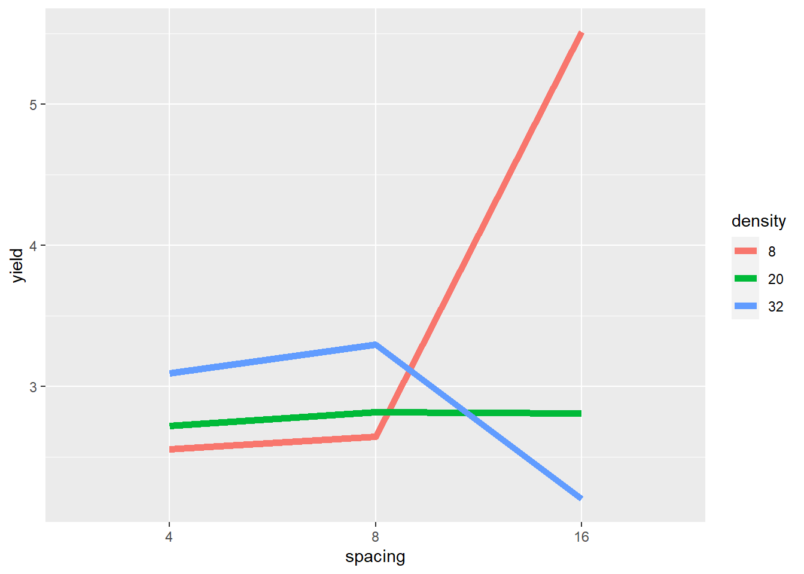
The plot gives critical insight into these data. Increasing spacing from 4 to 8 to 16 seems to cause a slight increase in yield where density=20. But where density=8, yield seems to increase rapidly between row spacing 8 and row spacing 16. Where density = 32, yield increases slighty with row spacing from 4 to 8, and then decreases markedly from 8 to 16.
The mean yield, averaged across row spacings, changes little across planting densities – even though the yields change dramatically within each of the individual row spacings. If we did not visually examine the data above, and instead relied on the ANOVA to alert us to an affect, we could miss this very important insight.
7.2.2.2 Analysis of Variance
Our analysis of variance is similar to that we ran for the first case study, except for it now includes the block term.
model = aov(yield ~ block + density + spacing + density:spacing, data = turnip_final)
anova_tab = anova(model)
knitr::kable(anova_tab)| Df | Sum Sq | Mean Sq | F value | Pr(>F) | |
|---|---|---|---|---|---|
| block | 2 | 0.9770963 | 0.4885481 | 25.06684 | 1.17e-05 |
| density | 2 | 3.3854519 | 1.6927259 | 86.85182 | 0.00e+00 |
| spacing | 2 | 2.6353852 | 1.3176926 | 67.60929 | 0.00e+00 |
| density:spacing | 4 | 16.3880593 | 4.0970148 | 210.21312 | 0.00e+00 |
| Residuals | 16 | 0.3118370 | 0.0194898 | NA | NA |
The planting density and plant spacing main effects were significant, as was their interacton.
Was the spacing effect significant at each level of density? We can slice the data to find this out.
library(broom)
slice_1 = turnip_final %>%
group_by(density) %>%
do(tidy(aov(.$yield ~ .$spacing))) %>%
as.data.frame() %>%
mutate(term = gsub("[.][$]", "", term))
knitr::kable(slice_1)| density | term | df | sumsq | meansq | statistic | p.value |
|---|---|---|---|---|---|---|
| 8 | spacing | 2 | 16.9677556 | 8.4838778 | 125.0694513 | 0.0000129 |
| 8 | Residuals | 6 | 0.4070000 | 0.0678333 | NA | NA |
| 20 | spacing | 2 | 0.0182000 | 0.0091000 | 0.1341523 | 0.8770078 |
| 20 | Residuals | 6 | 0.4070000 | 0.0678333 | NA | NA |
| 32 | spacing | 2 | 2.0374889 | 1.0187444 | 12.8701572 | 0.0067549 |
| 32 | Residuals | 6 | 0.4749333 | 0.0791556 | NA | NA |
We can see above that the effect of spacing on yield is only significant at \(P\le0.05\) density=8 and density=32. If we examining the effect of density separately for each level of spacing:
library(broom)
slice_2 = turnip_final %>%
group_by(spacing) %>%
do(tidy(aov(.$yield ~ .$density))) %>%
as.data.frame() %>%
mutate(term = gsub("[.][$]", "", term))
knitr::kable(slice_2)| spacing | term | df | sumsq | meansq | statistic | p.value |
|---|---|---|---|---|---|---|
| 4 | density | 2 | 0.4540667 | 0.2270333 | 4.347447 | 0.0680698 |
| 4 | Residuals | 6 | 0.3133333 | 0.0522222 | NA | NA |
| 8 | density | 2 | 0.6872889 | 0.3436444 | 3.670979 | 0.0909484 |
| 8 | Residuals | 6 | 0.5616667 | 0.0936111 | NA | NA |
| 16 | density | 2 | 18.6321556 | 9.3160778 | 135.037365 | 0.0000103 |
| 16 | Residuals | 6 | 0.4139333 | 0.0689889 | NA | NA |
We similarly see that density is only significant at \(P\le0.05\) where spacing=16.
In this trial, both main (density and spacing) effects are significant. But if don’t explore and explain our analysis further, we might miss how the both the magnitude of and the rank rank of row spacing effects on yield changes with plant density.
7.2.3 Discussing Interactions
In factorial experiments, there are three kinds of interaction that may occur. We can have no interaction, a spreading interaction, or a crossover interaction.
7.2.3.1 No Interaction
Where there is no interaction, the treatments effects are simply additive – the observed value of each observation in the plot above is the sum of the effect of the level of Factor A plus the effect of the level of Factor B. The difference between levels of Factor A are consistent across levels of Factor B, and vice versa. If we plot the data using a line plot, it will look like this:
factA = rep(c(1,2,3), 2)
Y = c(1:6)
factB = rep(c("T1", "T2"), each=3)
dataset = cbind(factA, Y, factB) %>%
as.data.frame() %>%
mutate(factA=as.numeric(factA),
Y=as.numeric(Y))
dataset %>%
ggplot(aes(x=factA, y=Y, group=factB)) +
geom_line(aes(color=factB), size=2) +
labs(x="Factor A", legend="Factor B", color="Factor B")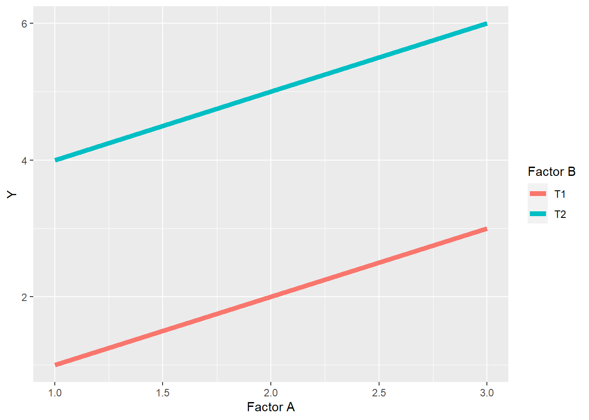
In a bar plot, it should look like this:
dataset %>%
ggplot(aes(x=factA, y=Y, group=factB)) +
geom_bar(stat="identity", aes(fill=factB), position = "dodge") +
labs(x="Factor A", legend="Factor B", fill="Factor B")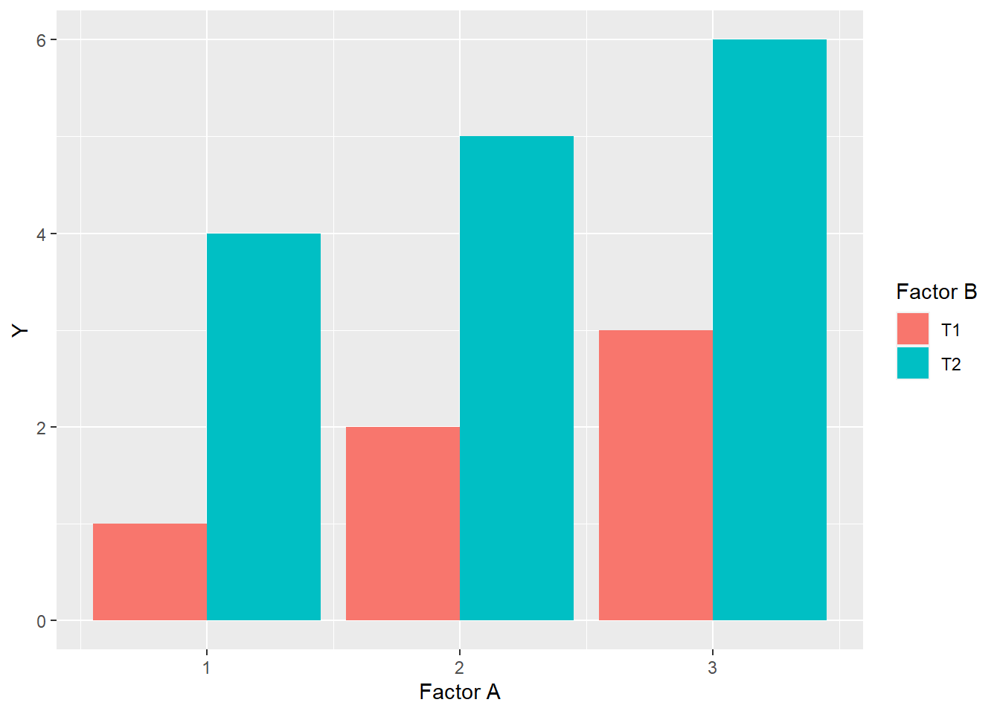
Finally, there will be no change in the ranking of levels within factors. Rank is the order of levels according to their obseved effects, from least to greatest. For factor A, the ranking of levels within Factor A is \(1 > 2 > 3\), while within Factor B, level T2 always ranks higher than level T1.
7.2.3.2 Spreading Interaction
In a spreading interaction, the ranking of levels within factors does not change, but the difference between them does.
factA = rep(c(1,2,3), 2)
Y = c(1,2,3,4,6,8)
factB = rep(c("T1", "T2"), each=3)
dataset = cbind(factA, Y, factB) %>%
as.data.frame() %>%
mutate(factA=as.numeric(factA),
Y=as.numeric(Y))
dataset %>%
ggplot(aes(x=factA, y=Y, group=factB)) +
geom_line(aes(color=factB), size=2) +
labs(x="Factor A", legend="Factor B", color="Factor B")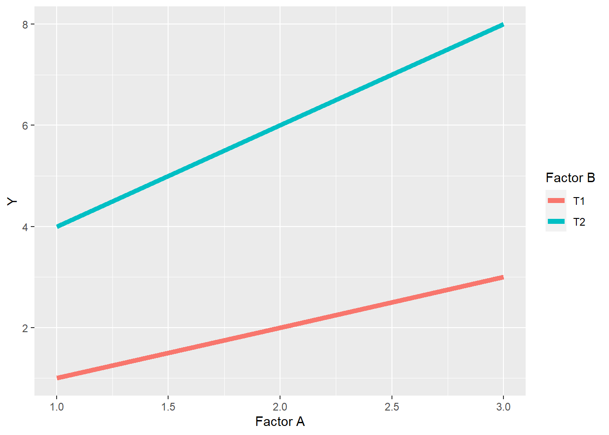
In the above plot, we can see the levels of Factor A still rank \(1<2<3\) in their effect on the observed value Y, for both level T1 and level T2 of Factor B. We also note that the levels of Factor B rank \(T1<T2\) at each level of Factor A. In this spreading interaction, however, the difference between T1 and T2 of factor B increases as the levels of Factor A increase. Similarly, the differences among levels of Factor A are greater for level T2 than level T1 of Factor B.
We saw a spreading interaction before in Case Study 1. The effect of sulfur increased with the level of phosphorus, and vice versa.
7.2.3.3 Crossover Interaction
A crossover interaction is similar to a spreading interacton in that the differences between levels within one factor change with the levels of a second factor, but different in that the ranking of levels changes as well. In addition, as we saw above, crossover reactions can mask the effects of factor levels.
factA = rep(c(1,2,3), 2)
Y = c(1,2,3,4,3,2)
factB = rep(c("T1", "T2"), each=3)
dataset = cbind(factA, Y, factB) %>%
as.data.frame() %>%
mutate(factA=as.numeric(factA),
Y=as.numeric(Y))
dataset %>%
ggplot(aes(x=factA, y=Y, group=factB)) +
geom_line(aes(color=factB), size=2) +
labs(x="Factor A", legend="Factor B", color="Factor B")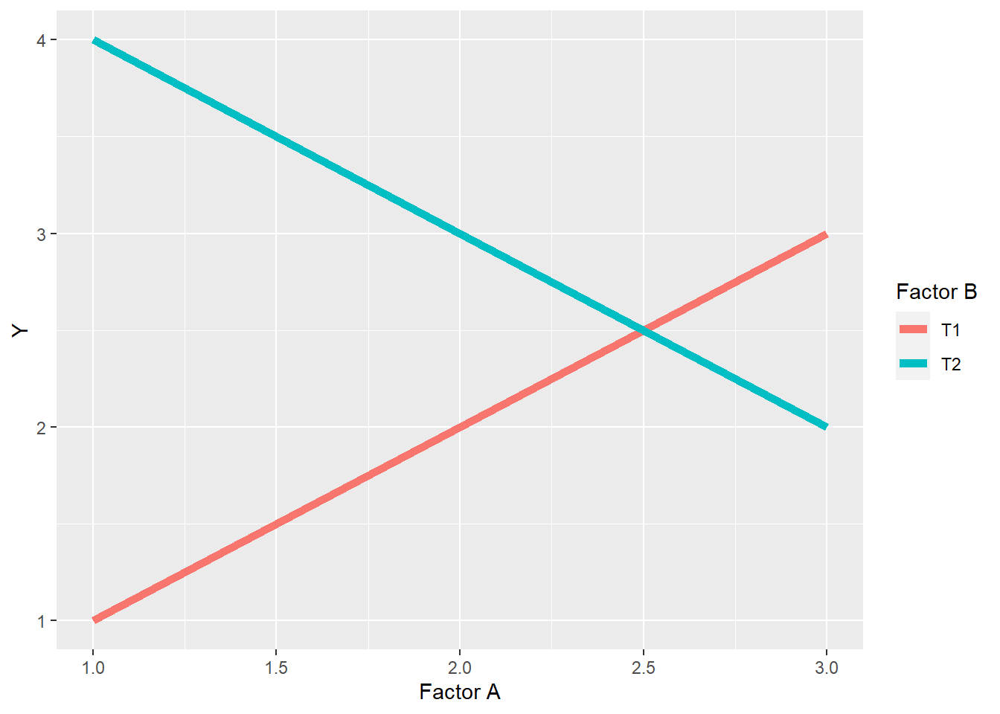
In the plot above, the ranking of levels within Factor B is \(T2>T1\) for levels 1 and 2 of Factor A, but \(T1>T2\) for level 3 of Factor A. In other words, whether T2 is greater than T1 depends on the level of Factor A. In addition, the levels of Factor B behave differently in response to the levels of Factor A. Level T1 of Factor B increases with the level of Factor B, while level T2 decreases.
We observed a crossover reaction in Case Study 2 above, where the effect of the widest row spacing on yield was greater than the narrow row spacings at the lowest planting density, but was less than the narrow spacings at the greatest planting density.
7.2.3.4 Discussing Interactions
Interactions are exciting. Spreading interactions show us how the proper combination of of management practices or inputs can have a combined effect that is greater than the individual effect of inputs. Conversely, crossover interactions show us how the advantage of one practice can be lost with the mismanagement of a second practice. This is the essence of agronomy.
When we identify spreading interactions, we learn how to build more productive cropping systems, as opposed to one-off solutions. Don’t get me wrong – there are some wonderful one-off solutions. But almost every input or practice can be made more effective by understanding how it interacts with other practices. In addition, trials can be designed to test how the effect of that input interacts with different environmental conditions, such as temperature and precipitation.
Interactions should always be highlighted when discussing the findings of an Analysis of Variance. The essense of an interaction is that the effect of one factor is dependent on the level of a second factor. If you don’t discuss the interaction between factors, you don’t completely describe the effect of either factor.
As we saw above, crossover interactions can mask the effects of factors. In the second case study, had we simply concluded from the main effect that yield did not differ with plant density, we would have failed to report what the data actually show: yield differs profoundly with plant density – but that row spacing affects the direction of that difference.
7.3 Split-Plot Design
The Split-Plot Design is a special kind of factorial experiment, in which one factor is nested within another. Let’s jump to an illustration.
library(agricolae)## Warning: package 'agricolae' was built under R version 4.0.5main_factor = c("A","B")
sub_factor = c("A","B","C","D","E")
trt_rand = design.split(main_factor,
sub_factor,
r=2,
design = "rcbd",
seed=2)
plot_map = trt_rand$book
plot_map %>%
ggplot(aes(x=plots, y=splots), group=main_factor) +
geom_tile(aes(fill=main_factor), color="black") +
geom_text(aes(label=sub_factor))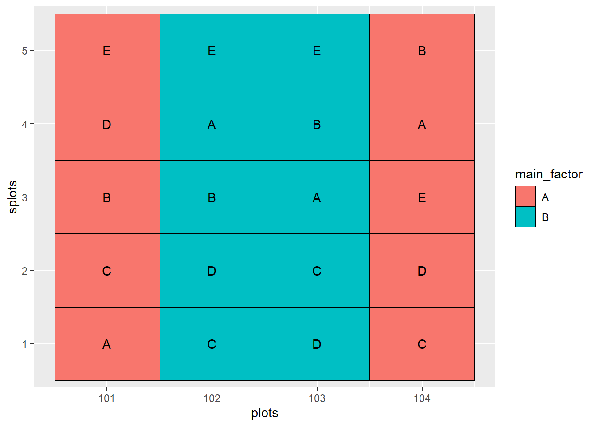
In the experiment show above, there are two factors: the main factor and the sub-factor. The main factor has two levels, while the sub-factor has 5 levels. The design is a randomized complete block design. As with any randomized complete block design, all treatments must occur once within each block.
Main factor levels are indicated by color. Sub-factor levels are indicated by letter.
In the above plot map, the main factors occur once in Block 1 (plots 101 and 102) and Block 2 (plots 103 and 104). Within each occurrence of the main factor, all five levels of the sub-factor are nested. The levels of the main factor are randomized within each block, and the levels of the subfactor are randomized within each main plot.
So now that we know what a split-plot design looks like, we will address the question: why would we want to do this? The first answer has to do with practicality. Say the first factor is composed of fungicide treatments that we are going to apply with a Hagge applicator with a 100 ft boom. The second factor is composed of treatments (hybrid, in-furrow fertilizer, etc) that can be apply in 20-foot widths. We can apply our treatments much more easily if we use a split-plot design and nest the second factor (the sub-factor) within the first factor (the main factor).
The second answer is that a thoughtfully-designed split-plot experiment will be more sensitive to differences among levels of the sub-factor than a randomized complete block trial. This is because, no matter how hard we try, plots that are closer together are more likely to be similar than plots that are further apart. By putting the sub-factor treatments close together, we can better estimate and test treatment effects.
The greater sensitivity to subfactor treatments, however, comes at a cost: we sacrifice some of our ability to detect differences among levels of our main factor. Sometimes, however, the levels of the main plot factor are so markedly different that we know we will detect differences among them, even if they are placed further apart. Plus, we may be more interested in the interaction between the main factor and sub-factor, and our ability to estimate and test this interaction, too, is enhanced by the split plot design.
###Case Study: Habenero Peppers If you are a chili pepper fan like me, you enjoy habanero chilies, also called “Scotch bonnets” in strict moderation. They are hotter than the jalapeno, but not devastating like the Carolina Reaper. In this study, habanero peppers were grown in pots of soils characterized by their color. They were harvested at two stages of ripening, green and orange, and their polyphenol concentrations measured. Soil was the main factor and harvest time the subfactor.
habanero = read.csv("data-unit-7/habenero.csv")
head(habanero)## block soil harvest_stage total_polyphenols
## 1 R1 red green 109.84958
## 2 R1 red orange 186.71777
## 3 R1 brown green 130.53991
## 4 R1 brown orange 207.00041
## 5 R1 black green 97.86705
## 6 R1 black orange 212.196187.4 Linear Additive Model
\[ Y_{ijk} = \mu + M_{j} + Error(B_i + BM_{ij}) + S_{k} + MS_{ik} + Error(BS_{ik}+BMS_{ijk})\] Bear with me. We can break this model down in to two sections. Let’s start with the first three terms. These focus on explaining the observed variance among the main plots.
\(B_i\) is the effect of block \(i\)
\(M_j\) is the effect of level \(j\) of the main factor
\(Error(BM_{ij})\) is the error (unexplained variance) associated with the block \(i\) and level \(j\) of the main factor. When we calculate the F-value for the main factor, we use this error term.
The second three terms focus on explaining the observed variance among subplots.
\(S_k\) is the effect of level \(k\) of the sub-factor
\(MS_{ik}\) is the interaction between level \(i\) of the main factor and level \(k\) of the subfactor
\(Error(BS_{ik}+BMS_{ijk})\) is the unexplained variance associated with the given levels of the sub factor and the main factor - sub-factor interaction. It is used in testing the significance of both those effects
Ugh. What a dumpster fire. Let’s look at the ANOVA table for our habenero trial to make more sense of this.
habanero_model = aov(total_polyphenols ~ soil + harvest_stage + soil:harvest_stage + Error(block:soil), data=habanero)## Warning in aov(total_polyphenols ~ soil + harvest_stage + soil:harvest_stage + :
## Error() model is singularsummary(habanero_model)##
## Error: block:soil
## Df Sum Sq Mean Sq F value Pr(>F)
## soil 2 1322.7 661.3 8.691 0.00791 **
## Residuals 9 684.9 76.1
## ---
## Signif. codes: 0 '***' 0.001 '**' 0.01 '*' 0.05 '.' 0.1 ' ' 1
##
## Error: Within
## Df Sum Sq Mean Sq F value Pr(>F)
## harvest_stage 1 42120 42120 176.72 3.2e-07 ***
## soil:harvest_stage 2 5938 2969 12.46 0.00256 **
## Residuals 9 2145 238
## ---
## Signif. codes: 0 '***' 0.001 '**' 0.01 '*' 0.05 '.' 0.1 ' ' 1We have two ANOVA tables. The top table evaluates the effect of soil in our main plots. Looking at the degrees of freedom, we can see we have 3 soils - 1 = 2 degrees of freedom for soil and (4 blocks - 1) x 3 = 9 degrees of freedom for the error. The F-value is the ratio of the mean square for soil and the mean square for the main factor error (residuals).
The second table evalulates the effect of of the harvest stage and the interaction between soil and harvest stage in the subplots. There are 2 stages - 1 = 1 degree of freedom for harvest stage and *(3 soils - 1) x (2 stages - 1) = 2 degrees of freedom for the interaction. The F-values for the harvest stage and interaction effects are the ratios of their mean squares to the mean square for the subplot error (residuals).
We analyze the ANOVA results the same as we would for any factorial trial. Looking at our table, we see significant results for soil, harvest stage, and their interaction. So lets go straight to the interaction plot.
habanero %>%
group_by(soil, harvest_stage) %>%
summarise(total_polyphenols = mean(total_polyphenols)) %>%
ungroup() %>%
ggplot(aes(x=harvest_stage, y=total_polyphenols, group = soil)) +
geom_line(aes(color=soil))## `summarise()` has grouped output by 'soil'. You can override using the `.groups` argument.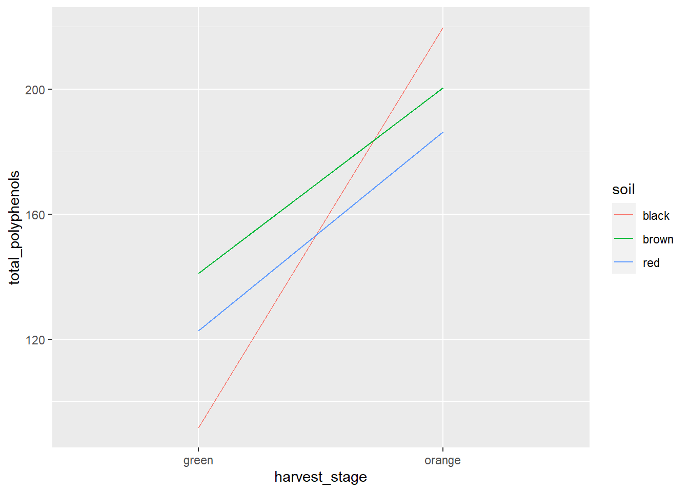
We can see the the total polyphenol concentration was affected by harvest stage in each soil. Orange habaneros had greater total polyphenos than green ones. Furthermore, we can see that black soils produced the fewest total polyphenols when habaneros where harvested green, but the most when they were harvested orange.
Looking at our interaction tables, we see soil has a significant effect on total polyphenols at both harvest stages.
library(broom)
slice_1 = habanero %>%
group_by(harvest_stage) %>%
do(tidy(aov(.$total_polyphenols ~ .$block + .$soil))) %>%
as.data.frame() %>%
mutate(term = gsub("[.][$]", "", term))
knitr::kable(slice_1)| harvest_stage | term | df | sumsq | meansq | statistic | p.value |
|---|---|---|---|---|---|---|
| green | block | 3 | 312.1119 | 104.03731 | 0.4324894 | 0.7375426 |
| green | soil | 2 | 5006.9642 | 2503.48208 | 10.4071271 | 0.0112036 |
| green | Residuals | 6 | 1443.3275 | 240.55458 | NA | NA |
| orange | block | 3 | 79.2278 | 26.40927 | 0.1592069 | 0.9199513 |
| orange | soil | 2 | 2253.3551 | 1126.67757 | 6.7921174 | 0.0287564 |
| orange | Residuals | 6 | 995.2810 | 165.88017 | NA | NA |
And that harvest stage had a significant effect at each level of soil.
library(broom)
slice_2 = habanero %>%
group_by(soil) %>%
do(tidy(aov(.$total_polyphenols ~ .$block + .$harvest_stage))) %>%
as.data.frame() %>%
mutate(term = gsub("[.][$]", "", term))
knitr::kable(slice_2)| soil | term | df | sumsq | meansq | statistic | p.value |
|---|---|---|---|---|---|---|
| black | block | 3 | 79.03859 | 26.34620 | 0.0555253 | 0.9798439 |
| black | harvest_stage | 1 | 32872.72483 | 32872.72483 | 69.2801410 | 0.0036344 |
| black | Residuals | 3 | 1423.46960 | 474.48987 | NA | NA |
| brown | block | 3 | 214.87947 | 71.62649 | 0.5937286 | 0.6605111 |
| brown | harvest_stage | 1 | 7062.17490 | 7062.17490 | 58.5400106 | 0.0046367 |
| brown | Residuals | 3 | 361.91529 | 120.63843 | NA | NA |
| red | block | 3 | 390.95481 | 130.31827 | 1.0869202 | 0.4734925 |
| red | harvest_stage | 1 | 8122.82365 | 8122.82365 | 67.7484520 | 0.0037542 |
| red | Residuals | 3 | 359.69045 | 119.89682 | NA | NA |
7.5 Conclusion
Experimental design of multiple treatment experiments plays a critical role in the quality of our data and the inferences that can be made. In most cases, you will probably run randomized complete block design experiments with a single factor, where blocking will reduce the error among plots within each block.
The factorial design allows greater efficiency if you are interested in studying two factors. It is also the only way to study the interaction between two factors.
Finally, where one factor is known to be more subtle (and therefore, harder to test significance for) than a second factor, or where differences in equipment size make it more practical to nest one factor inside the other, the split-plot design can be very useful.